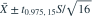

正态总体的均值与方差均未知。样本量 16，样本均值为 5，无偏样本方差为 4。给定  ，均值的双侧 95% 置信区间为哪项？
，均值的双侧 95% 置信区间为哪项？
，均值的双侧 95% 置信区间为哪项？- A
- B
- C
- D
我已思考，展开答案与解析
正确答案：A
- 总体方差未知，使用

。 - 这里 ，半宽为 ，得到给定区间。
易错提醒样本方差 4 对应样本标准差 2；自由度是 15。
原模拟卷 A · 模拟卷 A 第 31 题
原创
，均值的双侧 95% 置信区间为哪项？
。原模拟卷 A · 模拟卷 A 第 31 题
原创